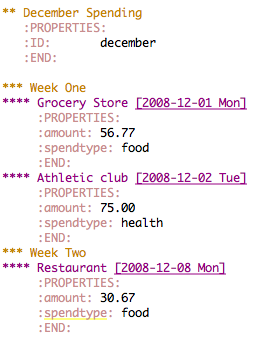

org-collector.el — collect properties into tables
Table of Contents
General
org-collector collects headline properties into tables with optional
pre-processing.
How to use it
Quick Examples
As a quick demonstration of use of org-collector first load it as
described below. Then download this example file, which contains the
following headlines/properties.

This property information can then be collected into tables.
Simple Example
Lets look at the following org-collector block.
#+BEGIN: propview :id "december" :conds ((string= SPENDTYPE "food")) :cols (ITEM AMOUNT) #+END:
To evaluate this block press \C-c\C-c with your cursor on the
#+BEGIN line of the block. Evaluation will result in the following
#+BEGIN: propview :id "december" :conds ((string= SPENDTYPE "food")) :cols (ITEM AMOUNT) | "ITEM" | "amount" | |----------------------------------+----------| | "Grocery Store [2008-12-01 Mon]" | 56.77 | | "Restaurant [2008-12-08 Mon]" | 30.67 | |----------------------------------+----------| | | | #+END:
Lets look at the arguments one by one.
- :id “december”
- The
:idargument has the effect of limiting the search to headers under the header with the id of “december”. - :conds ((string= SPENDTYPE “food”))
- The
:condsargument accepts a list of e-lisp expressions. Only headlines which match all of these expressions will be displayed in the table. The names of properties of a headline, in upper cases, can be used as variables in the expressions. This particular expression only returns true when theSPENDTYPEproperty of a headline is equal to “food”. - :cols (ITEM AMOUNT)
- The
:colsproperty controls what each row of the table should look like. In this case we are showingITEMwhich shows the actual text of the headline as well asAMOUNTwhich show the value of theAMOUNTproperty of each headline.
More Complex Example
This example demonstrates a couple of new headline arguments for
org-collector.
#+BEGIN: propview :cols (ITEM (+ 400 AMOUNT)) :scope tree :match "example" | "ITEM" | "(+ 400 AMOUNT)" | |---------------------------------------------------------------------------------+------------------| | "December Spending :example:" | 0 | | "Week One" | 0 | | "Grocery Store [2008-12-01 Mon]" | 456.77 | | "Athletic club [2008-12-02 Tue]" | 475.0 | | "Week Two " | 0 | | "Restaurant [2008-12-08 Mon]" | 430.67 | |---------------------------------------------------------------------------------+------------------| | | | #+END:
- :cols (ITEM (+ 400 AMOUNT))
- Notice that the
:colslist in this example contains an elisp expression for one of the column values. It is possible to run arbitrary elisp over the header properties the results of which will be used when building the resulting table. - :scope “tree” :match “example”
- The
:scope treeand:matchheader arguments limits the included headlines to those which have a tag matching “example” or their descendents.
Loading it (No surprises here)
The easiest way is by
M-x customize-variables RET org-modules
Check the line for collector. This will cause it to be loaded every time you start org-mode.
You’ll still have to load it manually the first time.
Of course, you can also just try it out by loading it manually.
If you prefer to manually customize your emacs then make sure that the
path to org’s contrib directory is in your load-path and add the
following to your .emacs.
(require 'org-collector)
Credits
org-collector was developed by Eric Schulte with much-appreciated help
from Carsten Dominik.